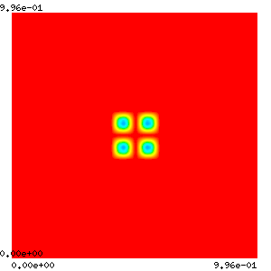
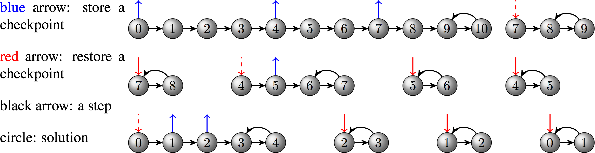

Adjoin time dependent differential equations
Using adjoint for PDE-constrained optimization
At a Glance
| Questions | Objectives | Key Points |
| How can gradients be computed for simulations? | Know PETSc/TAO’s capability for adjoint and optimization | Adjoint enables dynamic constrained optimization |
| How difficult is it to use the adjoint method? | Understand ingredients needed for adjoint calculation | Jacobian is imperative |
| Understand the concern of checkpointing | Performance may depend on checkpointing at large scale |
Note: To begin this lesson…
cd HandsOnLessons/adjoint
An Inverse Initial Value Problem
This code demonstrates how to solve an inverse initial value problem for a system of time-dependent PDEs on a 2D rectangular grid. The goal is to determine an optimal initial condition that can minimizes the difference between the simulated result and the reference solution. We will use this example to illustrate the performance considerations for realistic large-scale applications. In particular, we will show how to play with checkpointing and how to profile/tune the performance.
Compile the code
The example ex5opt_ic.c can be compiled with
make ex5opt_ic
To clean the example, do
make clean
ATPESC participants do not need to compile code because binaries are available in the ATPESC project folder on Cooley.
Command line options
You can determine the command line options available for this particular example by doing
./ex5opt_ic -help
and show the options related to TAO only by doing
./ex5opt_ic -help | grep tao
Problem being solved
The underlying PDE models reaction and diffusion of two chemical species that can produce a variety of patterns. It is widely used to describe pattern-formation phenomena in biological, chemical and physical systems. The concentrations of the two species are calculated according to the equation
The spatial pattern for the time interval [0,200] seconds is shown in the following figure.
| Figure 1 |
|---|
|  |
Given the pattern (observation) at the final time of the simulation, we want to determine the initial pattern that can minimize the difference between the simulated result and the observation.
Run 1: Monitor solution graphically
mpiexec -n 4 ./ex5opt_ic -forwardonly -ts_type rk -ts_rk_type 3 -ts_max_steps 20 -ts_monitor -ts_monitor_draw_solution
-forwardonlyperform the forward simulation without doing optimization-ts_type rk -ts_rk_type 3changes the time stepping algorithm to a 3rd-order Runge-Kutta method-ts_monitor_draw_solutionmonitors the progress for the solution at each time step- Add
-draw_pause -2if you want to pause at the end of simulation to see the plot
Run 2: Optimal checkpointing schedule
By default, the checkpoints are stored in binary files on disk. Of course, this may not be a good choice for large-scale applications running on high-performance machines where I/O cost is significant. We can make the solver use RAM for checkpointing and specify the maximum allowable checkpoints so that an optimal adjoint checkpointing schedule that minimizes the number of recomputations will be generated.
mpiexec -n 4 ./ex5opt_ic -ts_type rk -ts_rk_type 3 -ts_adapt_type none \
-ts_max_steps 10 -ts_monitor -ts_adjoint_monitor \
-ts_trajectory_type memory -ts_trajectory_max_cps_ram 3 \
-ts_trajectory_monitor -ts_trajectory_view -tao_max_it 1
-tao_max_it 1forces the optimization to stop after one iteration so that we can focus on the output related to the adjoint checkpointing. The output corresponds to the schedule depicted by the following diagram:

Questions
Looking at the output, we will find that the new schedule uses both RAM and disk for checkpointing and takes two less recomputations.
Run 3: Monitor the optimization progress
mpiexec -n 4 ./ex5opt_ic -ts_type rk -ts_rk_type 3 -ts_adapt_type none -ts_max_steps 5 -ts_trajectory_type memory -ts_trajectory_solution_only 0 -tao_monitor -tao_view
0 TAO, Function value: 8.48202, Residual: 7.02449
1 TAO, Function value: 1.72589, Residual: 2.46827
2 TAO, Function value: 0.556599, Residual: 1.75419
3 TAO, Function value: 0.181113, Residual: 0.698038
4 TAO, Function value: 0.0919628, Residual: 0.390951
5 TAO, Function value: 0.0330733, Residual: 0.276822
6 TAO, Function value: 0.0137442, Residual: 0.205942
7 TAO, Function value: 0.0032463, Residual: 0.0925536
8 TAO, Function value: 0.000876358, Residual: 0.0469696
9 TAO, Function value: 0.000172022, Residual: 0.0205954
10 TAO, Function value: 2.32065e-05, Residual: 0.00808249
11 TAO, Function value: 1.00524e-05, Residual: 0.00695292
12 TAO, Function value: 2.19094e-06, Residual: 0.00192488
13 TAO, Function value: 9.37506e-07, Residual: 0.00115926
14 TAO, Function value: 2.79883e-07, Residual: 0.000907609
15 TAO, Function value: 7.22e-08, Residual: 0.000346602
16 TAO, Function value: 3.51499e-08, Residual: 0.000184429
17 TAO, Function value: 1.48741e-08, Residual: 0.000117587
18 TAO, Function value: 7.83221e-09, Residual: 9.19265e-05
19 TAO, Function value: 2.14226e-09, Residual: 4.54118e-05
20 TAO, Function value: 8.99022e-10, Residual: 2.91421e-05
21 TAO, Function value: 3.28239e-10, Residual: 2.06652e-05
22 TAO, Function value: 1.85795e-10, Residual: 2.71364e-05
23 TAO, Function value: 1.14498e-10, Residual: 2.32933e-05
24 TAO, Function value: 8.12369e-11, Residual: 2.22391e-05
25 TAO, Function value: 1.87747e-11, Residual: 7.85018e-06
26 TAO, Function value: 7.29614e-12, Residual: 5.02828e-06
27 TAO, Function value: 1.72522e-12, Residual: 1.07136e-06
28 TAO, Function value: 1.0259e-12, Residual: 7.63383e-07
29 TAO, Function value: 1.72785e-13, Residual: 3.91911e-07
30 TAO, Function value: 1.0509e-13, Residual: 2.75909e-07
31 TAO, Function value: 4.02491e-14, Residual: 1.7222e-07
32 TAO, Function value: 1.5385e-14, Residual: 1.21345e-07
33 TAO, Function value: 3.20145e-15, Residual: 7.81137e-08
34 TAO, Function value: 1.66953e-15, Residual: 5.25802e-08
35 TAO, Function value: 3.39432e-16, Residual: 3.16327e-08
36 TAO, Function value: 9.68078e-17, Residual: 1.15783e-08
37 TAO, Function value: 8.23443e-17, Residual: 1.68247e-08
38 TAO, Function value: 1.53356e-17, Residual: 7.63537e-09
Tao Object: 4 MPI processes
type: blmvm
Gradient steps: 0
Mat Object: (tao_blmvm_) 4 MPI processes
type: lmvmbfgs
rows=8192, cols=8192
Scale type: diagonal
Scale history: 1
Scale params: alpha=1., beta=0.5, rho=1.
Convex factors: phi=0., theta=0.125
Max. storage: 5
Used storage: 5
Number of updates: 37
Number of rejects: 0
Number of resets: 1
TaoLineSearch Object: 4 MPI processes
type: more-thuente
maximum function evaluations=30
tolerances: ftol=0.0001, rtol=1e-10, gtol=0.9
total number of function evaluations=0
total number of gradient evaluations=0
total number of function/gradient evaluations=1
using variable bounds
Termination reason: 1
Active Set subset type: subvec
convergence tolerances: gatol=1e-08, steptol=0., gttol=0.
Residual in Function/Gradient:=7.63537e-09
Objective value=1.53356e-17
total number of iterations=38, (max: 2000)
total number of function/gradient evaluations=41, (max: 4000)
Solution converged: ||g(X)|| <= gatol
-tao_draw_solutioncan visualize the solution at each optimization iteration
Questions
Essential functions we have provided are FormFunctionGradient for TAO, TSIFunction and TSIJacobian for TS, RHSJacobianP for TSAdjoint. Because of the integral in the objective function, extra functions including CostIntegrand, DRDYFunction and DRDPFunction are given to TSAdjoint.
Run 4: Implicit time integration method
Now we switch to an implicit method (Crank-Nicolson) using fixed stepsize, which is the default setting in the code. At each time step, a nonlinear system is solved by the PETSc nonlinear solver SNES.
mpiexec -n 12 ./ex5opt_ic -ts_max_steps 5 -log_view -tao_monitor
-snes_monitorcan show the progress ofSNES-ts_monitorcan show the progress ofTS-log_viewprints a summary of the logging
A snippet of the summary:
...
Phase summary info:
Count: number of times phase was executed
Time and Flop: Max - maximum over all processors
Ratio - ratio of maximum to minimum over all processors
Mess: number of messages sent
Avg. len: average message length (bytes)
Reduct: number of global reductions
Global: entire computation
Stage: stages of a computation. Set stages with PetscLogStagePush() and PetscLogStagePop().
%T - percent time in this phase %F - percent flop in this phase
%M - percent messages in this phase %L - percent message lengths in this phase
%R - percent reductions in this phase
Total Mflop/s: 10e-6 * (sum of flop over all processors)/(max time over all processors)
------------------------------------------------------------------------------------------------------------------------
Event Count Time (sec) Flop --- Global --- --- Stage --- Total
Max Ratio Max Ratio Max Ratio Mess Avg len Reduct %T %F %M %L %R %T %F %M %L %R Mflop/s
------------------------------------------------------------------------------------------------------------------------
--- Event Stage 0: Main Stage
VecDot 1130 1.0 3.9795e-01 1.4 1.59e+06 1.0 0.0e+00 0.0e+00 1.1e+03 4 1 0 0 8 4 1 0 0 8 46
VecMDot 1919 1.0 5.9272e-01 2.0 5.40e+06 1.0 0.0e+00 0.0e+00 1.9e+03 5 4 0 0 14 5 4 0 0 14 106
VecNorm 3678 1.0 8.1644e-01 1.3 5.18e+06 1.0 0.0e+00 0.0e+00 3.7e+03 9 4 0 0 27 9 4 0 0 27 74
...
Questions
- Use memory instead of disk for checkpointing(
-ts_trajectory_type memory -ts_trajectory_solution_only 0); 2. Tune the time stepping solver, nonlinear solver, linear solver, preconditioner and so forth.
Run 5: Scale up the problem
We use explicit Runge-Kutta methods for time integration, and increase the grid resolution to 512 X 512.
mpiexec -n 12 ./ex5opt_ic -ts_type rk -ts_rk_type 3 -ts_adapt_type none -ts_max_steps 5 -ts_trajectory_type memory -ts_trajectory_solution_only 0 -tao_monitor -da_grid_x 512 -da_grid_y 512
Questions
No. The PDE solution blows up. As we decrease the grid spacing, the stepsize should be reduced according to CFL condition. For example, adding -ts_dt 0.1 should work.
Further information
Because this example uses DMDA, Jacobian can be efficiently approximated using finite difference with coloring. You can use the option -snes_fd_color to enable this feature.
Out-Brief
We have used PETSc to demonstrate the adjoint capability as an enabling technology for dynamic-constrained optimization. In particular, we investigated an inverse initial value porblem built on a time-dependent reaction-diffusion PDE.
We have shown the basic usage of the adjoint solver as well as functionalities that can facilitate rapid development, diagnosis and performance profiling.
Further Reading